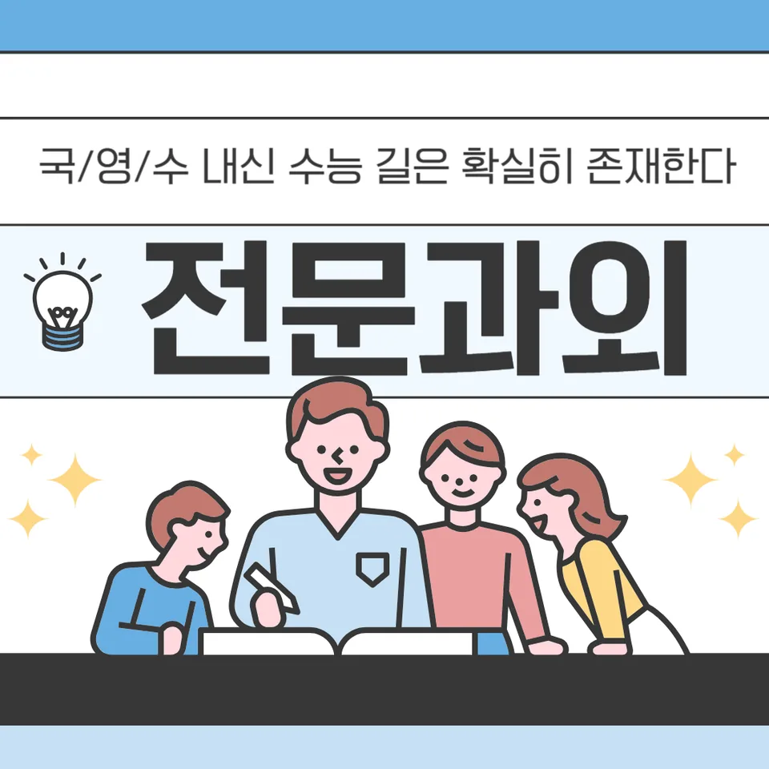

PageType : SUBJECT
URL : /경기도과외/고양시과외/일산동구과외/풍동과외/풍동수학과외/
지역 교육환경이 수학 학습에 미치는 영향
풍동수학과외를 찾는 학생들은 대개 학교 수업과 학원·스터디 활동이 함께 돌아가는 지역 분위기 속에서 공부 리듬을 잡아야 합니다. 같은 단원이라도 수업 속도나 과제 비중이 달라, 수학 학습의 출발점부터 격차가 생기기 쉽습니다. 특히 중간·기말을 앞두면 문제 풀이 시간이 늘지만, 개념을 이해한 학생과 그렇지 않은 학생의 체감 난도가 크게 갈립니다.
학교에서 발표·토론을 중시하는 흐름이 강한 환경에서는 풀이 과정 설명이 평가에 연결되면서 학생들이 생각을 정리하는 시간을 갖게 됩니다. 반대로 계산 중심의 연습이 늘어나는 학교라면, 사고력보다 절차가 먼저 굳어져 오답이 반복되는 경우가 관찰됩니다. 풍동수학과외는 이런 차이를 고려해, 학교가 요구하는 형태로 학습이 연결되는지 점검하는 데 초점이 맞춰집니다.
지역 학생들은 시험 직전에 학습량을 올리기보다, 평소에 쌓은 개념과 문제 해결 경험을 시험에서 끌어내는 방식을 더 필요로 합니다. 이 과정에서 공부습관이 바뀌면 같은 시간에도 효율이 달라지고, 복습이 다음 진도 이해로 이어지는 연결고리가 생깁니다.
학교별 평가 방식과 학습 방향
각 학교의 내신 평가는 단순 정답 여부뿐 아니라 과정, 서술, 유사 유형 확장 정도가 함께 반영되곤 합니다. 수행평가가 있는 학교에서는 수학에 대한 태도와 설명력이 평가 요소로 들어가며, 학생은 “맞히는 공부”에서 “설명할 수 있는 공부”로 방향을 조정하게 됩니다. 이때 풍동수학과외에서는 학교별 채점 기준과 연계해, 학생이 어떤 방식으로 답을 구성해야 하는지 학습 흐름을 정리합니다.
시험이 가까워질수록 학교는 유형을 더 촘촘히 다루는 편이라 학습은 늘어나지만, 학생이 이해한 범위와 훈련한 범위가 일치하지 않으면 점수는 흔들립니다. 그래서 풍동수학과외는 ‘오늘 한 챕터를 얼마나 했는가’보다 ‘오늘 한 챕터에서 무엇을 끌어낼 수 있는가’를 기준으로 계획을 조정합니다. 오답이 생겼을 때도 단순히 문제를 다시 푸는 것에 그치지 않고, 틀린 이유가 개념의 빈틈인지, 계산 습관인지, 해석 실수인지 분해하도록 돕습니다.
학교에서 특정 단원 비중이 커지는 시기에는 문제 해결 학습이 시험 패턴에 맞춰 변합니다. 이 변화는 학생에게 부담이 되기도 하지만, 동시에 공부습관을 구조화하면 안정적으로 이어집니다.
학생들이 수학을 어려워하는 주요 원인
많은 학생이 수학을 처음부터 “어려운 과목”으로 분류하면서 시작합니다. 문제는 대개 개념이 부족해서가 아니라, 문제를 만나면 무엇부터 확인해야 하는지 판단 루틴이 없어서 생깁니다. 풍동수학과외에서는 학생이 문제를 읽는 순간부터 조건을 정리하는 방식, 필요한 정보를 고르는 순서를 습관화해 사고력의 출발점을 다듬습니다.
또 다른 원인은 오답이 생겨도 분석이 짧게 끝나는 흐름입니다. 한 번 틀린 문제를 “또 틀림”으로 끝내면, 같은 실수가 다음 시험에서도 반복됩니다. 학생은 ‘실수한 나’에만 집중하고, 원인으로 돌아가지 못하면 자신감이 줄어들기 쉽습니다. 결국 불안이 커져 학습 속도가 떨어지고, 다시 문제 해결 연습이 어려워지는 악순환이 생깁니다.
학습이 진행될수록 용어가 누적되는데, 이때 이해가 얕은 상태로 넘어가면 중간에서 막히기보다 뒤로 갈수록 더 크게 어려워집니다. 따라서 풍동수학과외는 개념 이해와 활용을 분리하지 않고, 학교 수업에서 다룬 단서를 문제 해결로 연결하는 연습을 반복합니다.
학년 변화에 따른 수학 학습의 차이
학년이 올라갈수록 수학은 단순 연산에서 사고의 단계가 늘어납니다. 초기에 학생은 풀이 과정의 모양을 외우지만, 중·고로 가면서는 조건 해석과 전략 선택이 필요해집니다. 이 시점에서 풍동수학과외를 통해 학습 부담이 관리되는 경우가 많습니다. 진도를 따라가는 것만으로는 부족해지고, 이해를 확인하는 체크가 학습의 중심이 되기 때문입니다.
중간쯤부터는 내신과 시험이 겹치며 시간 배분이 흔들립니다. 학생은 ‘어떤 과제를 먼저 끝내야 손해가 줄어드는지’를 감으로 판단하기 쉬운데, 계획적인 학습 습관이 없으면 주말이 다 소진됩니다. 풍동수학과외에서는 시간 효율을 높이기 위해, 학교 수업 직후 복습과 시험 전 재구성을 서로 다른 방식으로 설계합니다.
상위 학년으로 갈수록 수행평가나 서술형 비중이 올라오는 학교도 있어, 같은 단원을 공부해도 채점 관점이 달라집니다. 결과적으로 학생은 수학 개념을 ‘내 머리에서 설명 가능한 형태’로 정리해야 하며, 이 과정에서 사고력과 문제 해결이 함께 성장합니다.
꾸준한 학습이 실력으로 이어지는 과정
풍동수학과외에서 자주 강조하는 핵심은 꾸준함이 단순 반복이 아니라, 기억과 이해를 연결하는 방식이라는 점입니다. 복습이 생략되면 새로운 개념을 배워도 바로 다음 단원에서 흔들립니다. 반대로 복습이 짧더라도 규칙적으로 들어가면, 학생은 공부습관을 통해 불안을 줄이고 학습 속도를 유지할 수 있습니다.
학습의 자신감은 한 번에 생기기보다, 작은 성공이 축적되는 과정에서 형성됩니다. 학생이 오답을 분석하고 같은 실수를 줄이는 경험을 반복하면 “내가 할 수 있다”는 감각이 자리 잡습니다. 이때 자기주도학습은 거창한 계획이 아니라, 오늘 한 공부가 내일 어떤 학습으로 이어지는지 스스로 확인하는 태도로 나타납니다.
시험 기간에는 학습 패턴이 변화합니다. 문제를 더 많이 풀기보다, 복습 범위를 확정하고 오답을 묶어 재도전하는 흐름이 중요해집니다. 풍동수학과외는 시험 직전에도 공부가 분산되지 않도록, 학생이 계획을 꾸준히 유지하도록 학습 관리 기준을 조정합니다.
문제 해결력을 키우는 학습 습관
문제 해결은 공식 적용 능력만으로 완성되지 않습니다. 학생이 조건을 읽고, 필요한 정보를 고르고, 풀이의 흐름을 선택하는 과정이 먼저 자리 잡아야 합니다. 풍동수학과외는 풀이 전 체크리스트처럼 사고의 단계가 보이도록 학습을 구성해 학생이 문제를 해석하는 힘을 키우는 데 집중합니다.
문제를 풀 때마다 “어디서 막혔는지”를 남기면 오답이 자료가 됩니다. 오답은 단순히 틀린 기록이 아니라, 학생이 아직 연결하지 못한 개념 고리의 증거가 되기 때문입니다. 그래서 풍동수학과외에서는 오답을 다시 푸는 과정에서 실수 유형을 나누고, 같은 유형의 실수를 줄이는 반복을 설계합니다.
또한 문제 해결 학습은 학습 속도보다 정확한 이해를 우선시합니다. 시간이 부족해 보여도, 핵심 개념이 정리되지 않은 상태라면 다음 문제에서 반복 실수가 생깁니다. 학생은 점차 “이 유형에서는 무엇을 먼저 확인해야 하는지”를 스스로 떠올리는 단계로 넘어가며 사고력이 성장합니다.
복습과 학습 관리가 중요한 이유
복습이 필요한 이유는 단원 전체를 다시 보는 데 있지 않습니다. 기억이 옅어지는 구간이 있고, 그 구간에 맞춰 짧게 되돌아가야 다음 수업을 이해하는 속도가 살아납니다. 풍동수학과외는 학교에서 진도를 따라갈 때 생기는 공백을 조기에 발견하도록 복습 단위를 작게 설정합니다.
학습 관리는 특히 시험 전후로 흔들리는 흐름을 잡아줍니다. 학생은 시험 기간에 문제를 늘리지만, 무엇을 복습했는지 기록하지 않으면 효과가 줄어듭니다. 그래서 풍동수학과외는 복습 결과가 학습 성과로 연결되는지 확인하는 루틴을 만듭니다. 오답이 많아질수록 분석 시간이 늘어나야 하는데, 이때도 계획이 없으면 학생은 감정적으로 공부를 계속하게 됩니다.
가정에서도 학교에서 배운 내용이 이어져야 안정적입니다. 학생이 혼자 체크하기 어려워질 때 부모가 느끼는 고민은 “어느 부분이 부족한지”를 파악하지 못하는 데서 시작됩니다. 풍동수학과외는 개념-문제-오답의 연결을 함께 정리해, 학부모가 관찰할 수 있는 기준을 제공하는 방식으로 학습 환경을 정돈합니다.
수학 학습에서 확인해야 할 핵심 요소
풍동수학과외를 통해 학습 점검을 할 때는 단원 진도, 내신 범위 반영, 수행평가 준비 흐름을 함께 확인해야 합니다. 같은 주제를 공부하더라도 학교에서 요구하는 표현 방식이 다르면 학생의 답은 달라지고, 결과적으로 점수는 경험이 쌓이기 전에 흔들릴 수 있습니다.
아래 체크 항목을 기준으로 보면 학생의 수학 학습 과정이 보입니다. 핵심은 이해가 실제 문제 해결로 이어지는지, 오답이 반복으로 굳지 않는지, 공부습관이 시험만을 위한 것이 아닌지로 정리됩니다.
- 학교 수업과 시험 범위에 맞는 학습 계획을 세우고 있는지 확인합니다.
- 개념을 암기하는 데 그치지 않고 문제 해결 과정에 활용하고 있는지 점검합니다.
- 틀린 문제를 다시 풀어보며 실수의 원인을 꾸준히 분석합니다.
- 단기 성과보다 지속적인 복습과 학습 습관을 유지하고 있는지 살펴봅니다.
마지막으로 학생마다 성장 속도와 학습 과정이 다름을 전제로, 학교와 가정에서 이어지는 환경이 어떤지 봐야 합니다. 수학은 한 번의 학습으로 끝나지 않고, 반복과 사고의 누적이 남는 과목이기 때문입니다.
자주 묻는 질문
수학 학습은 언제부터 체계적으로 준비하는 것이 좋을까요?
학교 진도와 내신 흐름이 바뀌기 시작하는 시점부터 준비하는 편이 효과적입니다. 보통 학년 초에는 개념 연결이 약해지기 쉬우므로, 풍동수학과외로 개념 이해와 짧은 복습 루틴을 먼저 잡는 흐름이 유리합니다.
학교 내신과 수행평가는 어떻게 함께 준비하면 좋을까요?
내신은 시험 범위 중심으로 학습하고, 수행평가는 풀이 과정 설명이나 서술 형태에 맞춰 준비하는 식으로 나누는 것이 좋습니다. 풍동수학과외에서는 학교 채점 관점을 고려해 학생이 답을 구성하는 습관을 만들도록 돕습니다.
수학 개념이 부족한 학생도 학습 흐름을 따라갈 수 있을까요?
따라갈 수 있습니다. 다만 개념을 “한 번 봄”으로 끝내지 말고, 문제 해결에서 바로 활용되는 형태로 확인해야 합니다. 오답 분석을 통해 부족한 연결 고리를 찾으면 공부 부담이 줄어듭니다.
문제 해결력은 어떤 과정을 통해 향상될 수 있을까요?
풀이 전 조건 정리와 해석, 풀이 중간에서 막힌 지점 기록, 오답을 유형별로 분해하는 과정이 반복되면 문제 해결이 안정적으로 바뀝니다. 풍동수학과외는 사고력과 문제 해결 학습이 동시에 자라도록 구성합니다.
꾸준한 학습 습관은 어떻게 만들어갈 수 있을까요?
긴 계획보다 짧고 지속적인 복습과 체크가 먼저 자리 잡아야 합니다. 학교 수업 직후 복습, 시험 전 오답 정리처럼 시점이 다른 루틴을 분리하면 학생은 자기주도학습으로 넘어갈 준비가 됩니다. 풍동수학과외는 이 흐름을 학습 관리 기준으로 정리해 줍니다.
